首页：查看学习安排和班级消息
首页让学生先看学习情况，再找到要做的任务，也能查看班级通知和老师的消息。这里保留四项核心功能；作答、提交和成绩查看放在作业篇，师生之间如何同步另见独立联动说明。
功能定位与页面结构
首页
作业&任务 → 学习概况待完成作业、课程出勤率、待完成任务、阅读与听力词汇水平；签到作为辅助信息。
作业&任务 → 学习任务今日任务、本周日历、逾期任务 → 进入对应学习内容。
学习概况 → 词汇量测评历史成绩 → 阅读／听力能力报告；另有分享和重新测试入口。
黑板报 → 班级消息通知和作业消息 → 查看已有评论、展开留言；作业消息可进入相关作业。
核心功能清单
下载核心功能对比清单学习概况
一眼看到还有多少学习内容，以及出勤和词汇水平。
- 首页按所选班级展示待完成作业数、课程出勤率和待完成任务数。
- 阅读、听力词汇水平分别显示等级和词汇量；详细报告统一在下方“词汇量测评”说明。
- 页面上方展示一周签到情况和签到获得的校币，作为坚持学习的辅助提示。
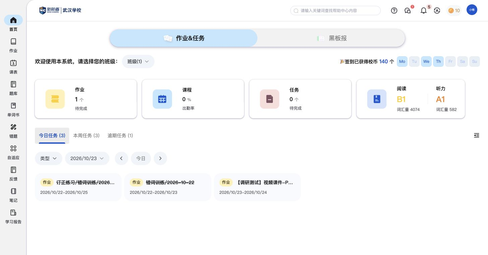
对比时可关注：首页是否同时回答“还有多少要学”和“目前学得怎样”。
出勤率已有展示；当前样例没有课程数据，具体统计规则待补。
学习任务
按今天、本周和逾期三个角度查看学习安排，进入具体任务。
- 今日任务用卡片显示名称、类型和起止日期；点击任务可进入学习内容。
- 本周任务用日历显示安排，跨天作业连续占据对应日期。
- 逾期任务集中显示原定时间和逾期天数，方便学生补做。
- 页面提供课程、作业、任务三类事项入口；现有内容样例以作业为主。
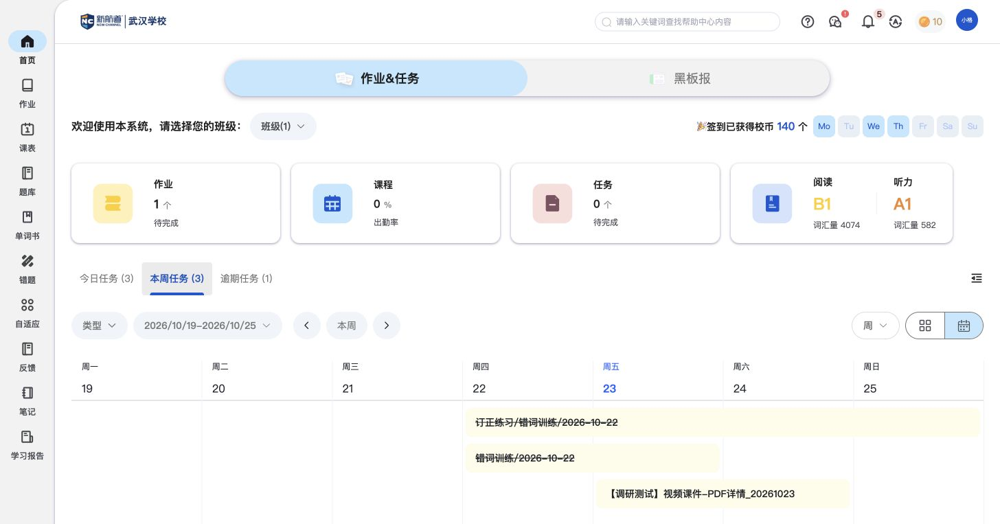
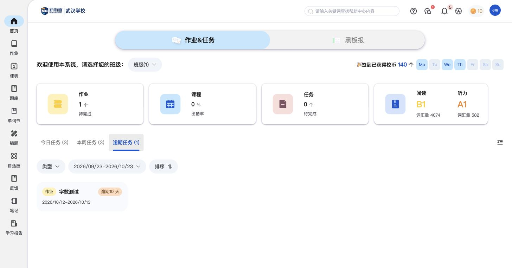
对比时可关注：学生能否看清今天要做什么、本周如何安排、哪些内容需要补做。
任务日历不等于待办清单：已有完成的作业仍可出现在时间安排中。顶部待完成数量与日历条数不能直接等同。
词汇量测评
分别了解阅读和听力的词汇水平，回看测评成绩和能力说明。
- 从首页词汇卡片进入历史报告，查看测试时间、耗时及阅读和听力成绩。
- 详细报告分别显示词汇量、CEFR等级和文字能力说明，并提供平台的语言考试换算表。
- 报告可生成分享链接；重新测试前会提示将覆盖已有成绩。
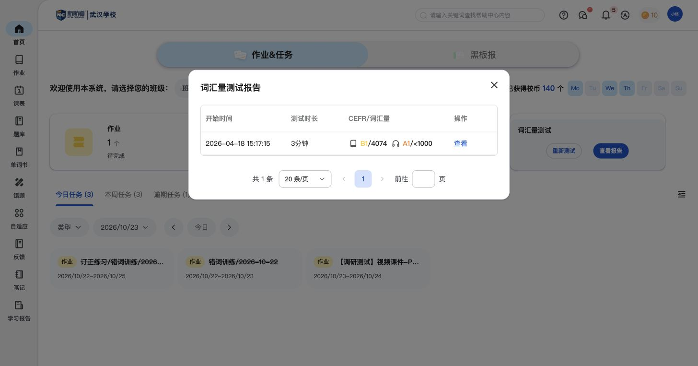
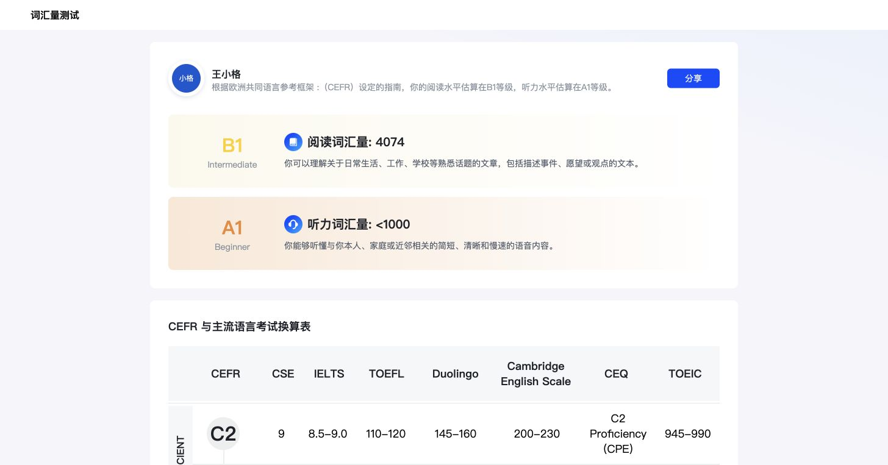
对比时可关注：词汇能力是否区分阅读和听力，成绩是否有易懂的解释并支持回看。
考试换算表是平台提供的参考；换算依据尚未核验。首页听力词汇量显示具体数值，报告按区间展示。
班级消息（黑板报）
查看班级通知和作业消息，在消息下查看评论或留言。
- 消息显示老师、发布时间、类型和正文；作业消息还显示截止时间及关联作业卡片。
- 点击关联作业卡片，会进入“我的作业”并定位对应任务，再点击“打开”进入学习。
- 消息下可查看已有评论、展开评论输入框；已有评论旁也有回复入口。“最新回复”提供集中查看回复的入口。
- 作业、课程、考试、通知、活动、日常、假期可按类型查看；实际内容样例为作业与通知。
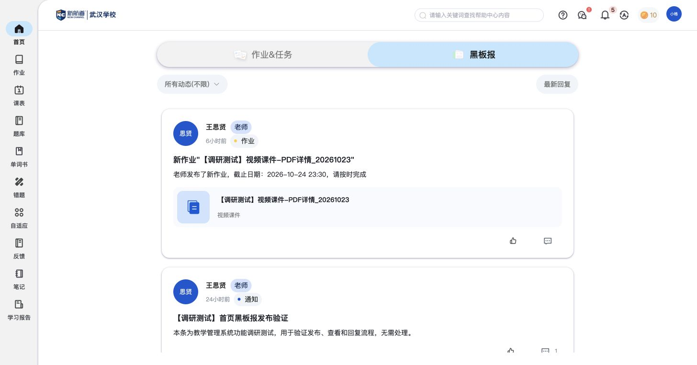

对比时可关注：通知是否能带到具体作业，讨论是否保留在对应消息下。
学生页面已看到评论与回复入口，未见独立发布动态入口；学生新评论的教师侧展示另列在联动说明中待补。
与其他模块的关联
- 首页负责概况、时间安排和班级消息；作业篇负责学习内容、作答、提交、成绩与订正，首页不重复展开。
- 首页集中展示今天、本周和逾期事项；课表篇负责查看课程时间。词汇量测评是水平评估，日常背词与练习放在单词书篇。
- 教师如何发布消息、布置课件，以及学生侧记录如何返回教师端，统一引用独立联动说明。
学生端 · 作业详情 · 学生端 · 课表 · 学生端 · 单词书 · 常规发布与查看 · 班级通知与回复 · 常规作业流程 · PDF课件样例
待补内容
- 课程、普通任务在首页如何呈现：当前样例以作业为主，有课程和普通任务后再补相应卡片与跳转。
- 词汇量测评的完整题型与流程：现有依据覆盖历史、报告、分享及重测提示，尚未记录完整答题过程。
- 签到奖励和出勤率的规则：入口与指标已见，奖励触发方式、出勤统计口径尚未确认。
操作依据
保留19组截图与完整页面观察，基础操作不单列为核心功能。
辅助页面截图：班级范围、分类、分享等
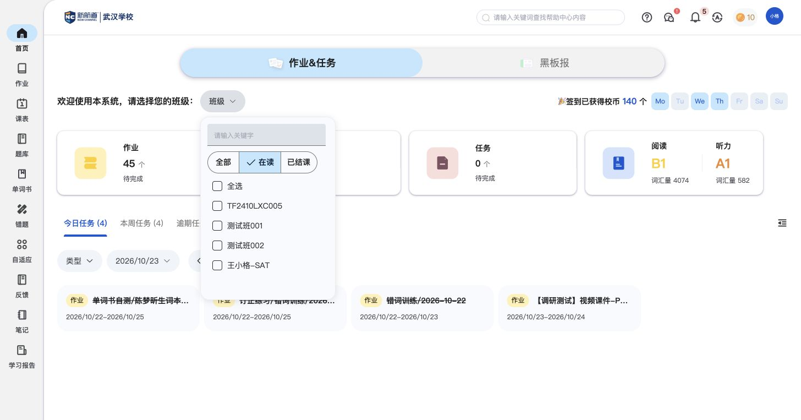
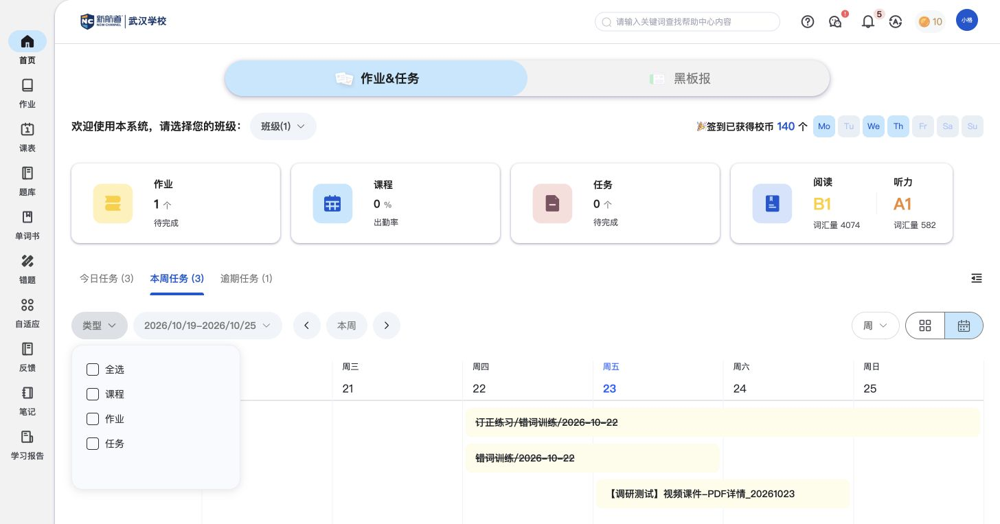
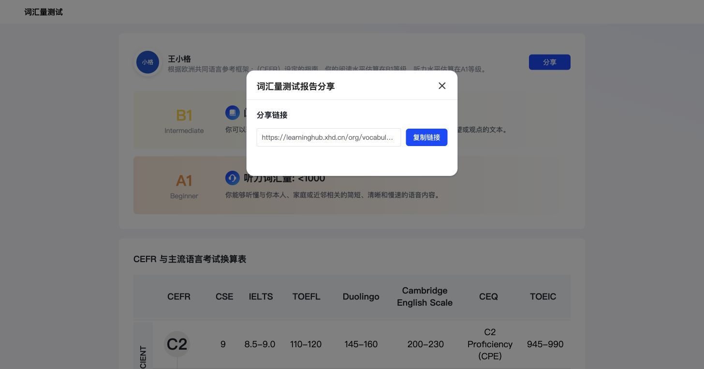
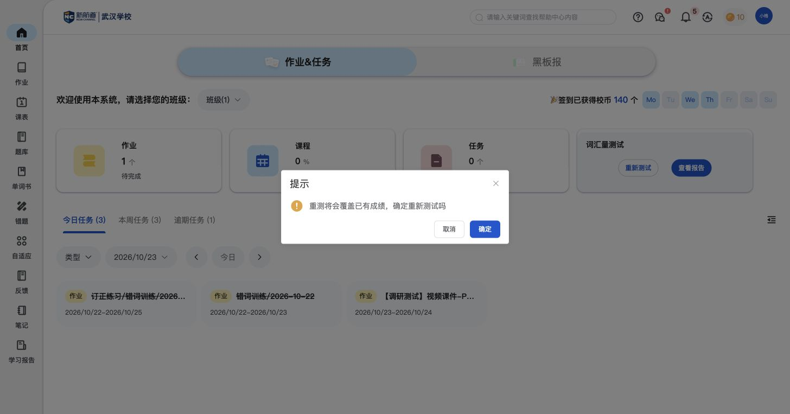
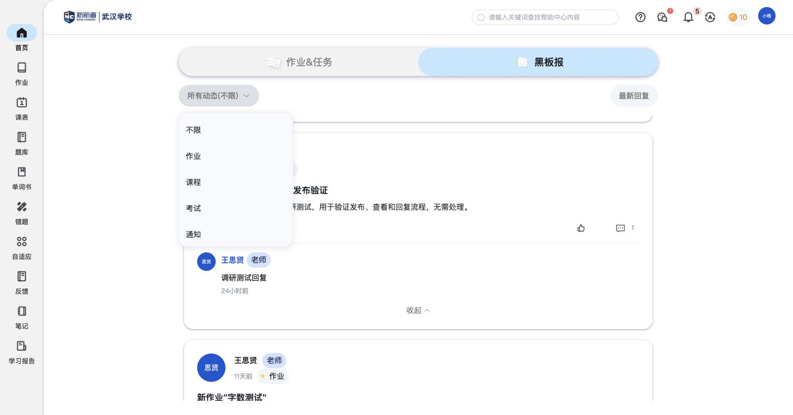
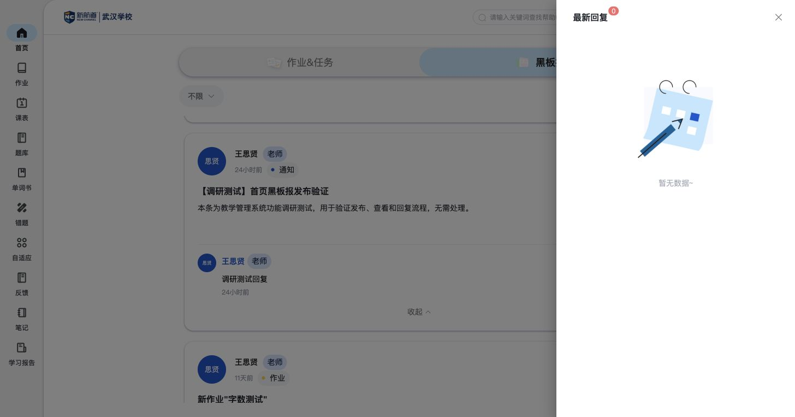
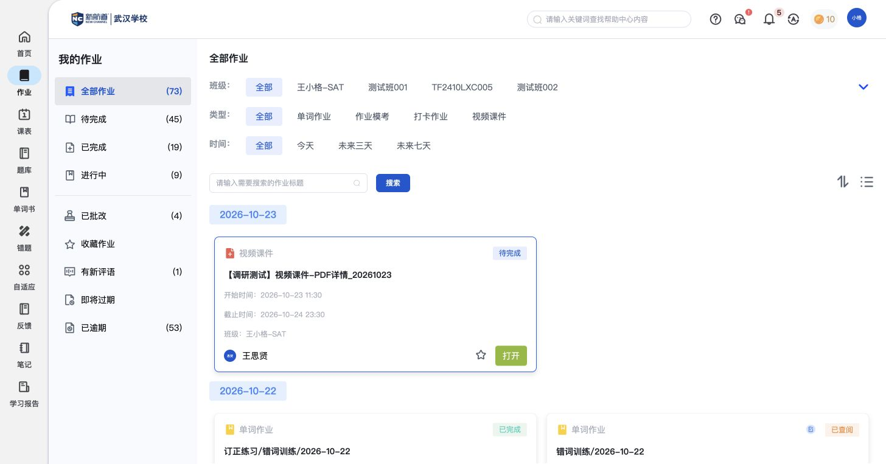
逐项操作记录与截图（按需查看）
- SH01 截图 · 页面观察 — 学生首页：菜单、学习摘要、任务入口及签到展示
- SH02 截图 · 页面观察 — 首页按在读班级组织学习范围，当前账号有四个班级
- SH03 截图 · 页面观察 — 选择王小格-SAT后：首页显示班级(1)，概览与任务保持可见
- SH04 截图 · 页面观察 — 本周任务使用周日历组织，首页任务按班级范围更新为3项
- SH05 截图 · 页面观察 — 加载后的周日历显示三条跨日任务，班级范围内待完成作业为1
- SH06 截图 · 页面观察 — 首页事项类型为课程、作业、任务，支持组合查看
- SH07 截图 · 页面观察 — 逾期任务卡显示任务名、原周期和逾期天数
- SH08 截图 · 页面观察 — 从首页逾期卡片新开自定义作业：材料、多媒体作答入口和交卷；未更改已有草稿
- SH09 截图 · 页面观察 — 王小格-SAT今日任务卡，包含教师端布置的测试PDF课件
- SH10 截图 · 页面观察 — 词汇量报告历史：测试时间、时长、阅读/听力CEFR与词汇量
- SH11 截图 · 页面观察 — 词汇量详情：阅读B1与听力A1能力说明，以及平台展示的考试换算对照表
- SH12 截图 · 页面观察 — 词汇量报告分享弹窗提供链接及复制入口，未对外发送
- SH13 截图 · 页面观察 — 重新测试提示会覆盖已有成绩；保留原成绩，未继续
- SH14 截图 · 页面观察 — 学生黑板报显示教师发布的PDF作业动态和原测试通知，未见发布按钮
- SH15 截图 · 页面观察 — 展开教师端测试黑板报的已有回复，学生端可见“调研测试回复”。
- SH16 截图 · 页面观察 — 黑板报动态分类：作业、课程、考试、通知、活动、日常、假期；分类入口不代表各类已有样例。
- SH17 截图 · 页面观察 — 最新回复以侧边抽屉呈现，本账号显示0条；不将通知总数5当作回复数。
- SH18 截图 · 页面观察 — 学生可在通知下展开评论输入框，含发布按钮；未输入或发布评论。
- SH19 截图 · 页面观察 — 点击黑板报中的课件卡片后进入“我的作业”列表并定位、描边对应任务；不是直接打开PDF详情。